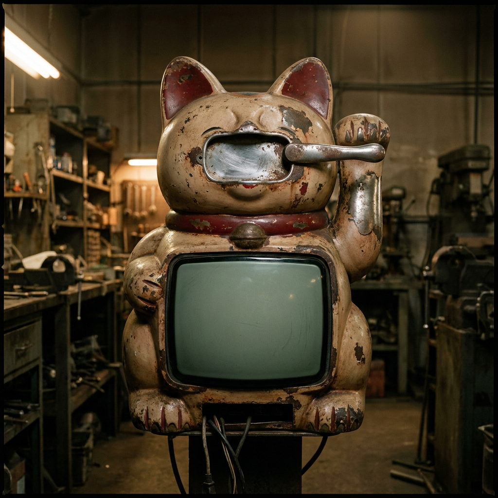

システムログ
[--:--:--] モデル初期化完了
[--:--:--] データストリーム待機
システムステータス
ネットワーク遅延-- ms
データ整合性--%
観測ノード数--/512
電力供給安定
ユーザー情報
ID: observer_001
アクセスレベル: L2
セッション: 00:00:00
アクセスレベル: L2
セッション: 00:00:00

終末確率(中央値)
0.000
± 0.000
主要シナリオ (上位3件) ±68% 信頼区間
注意:本システムは確率的予測であり、絶対的な未来を示すものではありません。
確率は招き猫(Gemini 3.5 Flash / Vertex AI)が実データを基に推論したものです。
確率は招き猫(Gemini 3.5 Flash / Vertex AI)が実データを基に推論したものです。
確率の推移 (24h)
中央値信頼区間
不確実性指標
エントロピー(情報量)--
モデル分散--
パラメータ安定性--
外部ノイズ--
観測データ品質
総合評価--
欠損データ率--%
ノイズレベル--
バイアス検出--
システムメッセージ
観測データを待機しています。
レバーを引くと予測を開始します。
レバーを引くと予測を開始します。